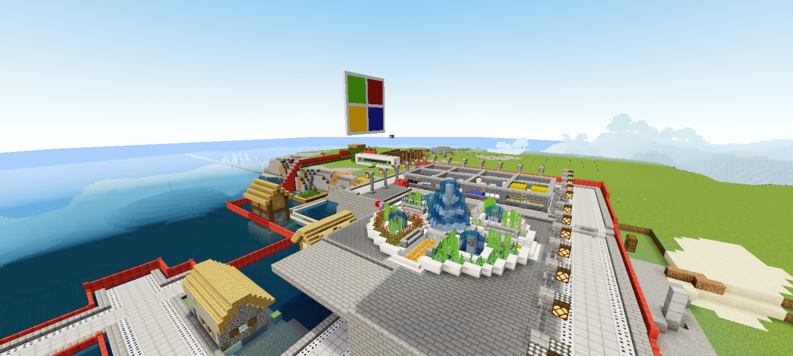
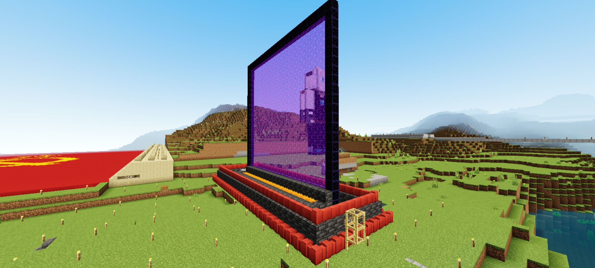
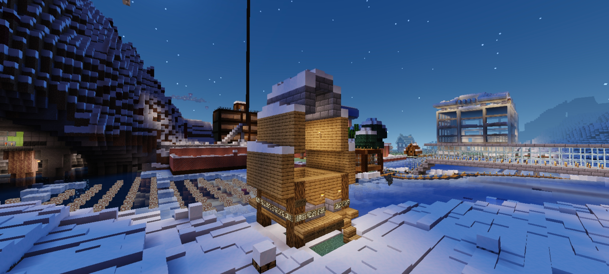
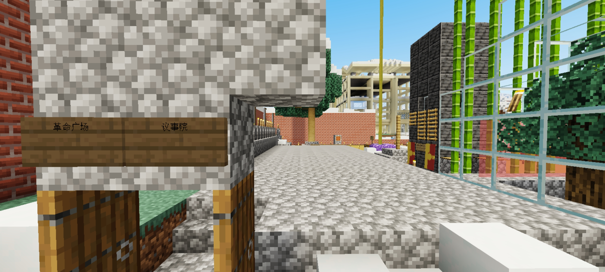

由于历史原因，服内文物主要集中于主岛和革命广场地区。
本介绍只针对服内较大型或较重要文物进行介绍。
西北自治区
位于X轴-840至-729，Z轴-2560至-2444的矩形区域内。
目前该地区处于完全封锁状态。
建造者为前服主MCMinXin (已退服)，管理权仍在MCMinXin手中
主岛北岸
位于X轴-455至-445，Z轴-1110至-1140的矩形区域内。
该地区可自由参观，猪人塔为封锁区域，附近的竞技场和雕像则为开放状态。
猪人塔和竞技场建造者也为前服主MCMinXin
Zeland小屋
位于X轴-1469至-1459，Z轴-1613至-1604的矩形区域内。
该建筑可自由参观，为广场开拓者Zeland的故居。
建造者Zeland630
一大会址
位于X轴-1416至-1423，Z轴-1561至-1543的矩形区域内。
该建筑紧邻广场地狱门，原本有玻璃罩子保护。
在2022/10/09，WebbySalt294712对该文物进行了不可挽回的破坏，导致玻璃罩子近乎损毁，地面建筑和诗篇基本消失殆尽。
建造者BAaANMNp2861